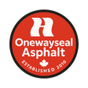
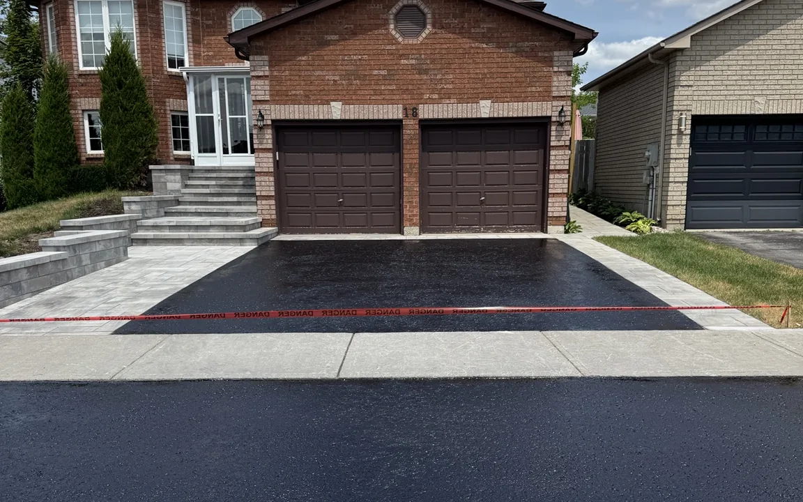

At OnewaySeal, we specialize in driveway sealing, oil-based sealcoating, crack filling, asphalt repair, power washing, and interlock restoration throughout Bradford and surrounding areas.
We use professional oil-based sealer and treat every project like it's our own.
Protect and upgrade your property with our professional, reliable services using premium oil-based sealer and proper surface preparation.
We’re proud to be Bradford’s trusted team for driveway sealing, crack filling, asphalt repair, and exterior restoration services. Here's what sets us apart:
Decades of combined experience means reliable service and proven quality workmanship.
Our 5.0★ Google rating shows our dedication to customer satisfaction and high standards.
Thousands of driveways sealed, repaired, and restored across Bradford and surrounding areas.
We aren’t finished until you're completely happy with the result, guaranteed.
With years of experience, Oneway Asphalt Seal provides high-quality driveway sealing, crack filling, asphalt repair, and maintenance services in Bradford. We specialize in protecting and enhancing driveways with professional oil-based sealer, proper surface preparation, and expert craftsmanship. Our team is dedicated to delivering long-lasting solutions that improve durability and curb appeal.
Prefer to text instead? Click here.
Here are some of the most common questions homeowners ask before booking driveway sealing, crack filling, asphalt repair, power washing, or interlock work.
Most asphalt driveways should be sealed every 2 to 3 years, depending on traffic, weather exposure, and the current condition of the surface. If your driveway is fading, drying out, or starting to show light cracking, it may be time to reseal it.
Yes. We offer crack filling and surface preparation before sealing when needed. Filling cracks helps reduce water penetration and supports a cleaner, longer-lasting result.
Yes. We use professional oil-based sealer to help protect asphalt surfaces, restore a darker finish, and improve long-term durability and curb appeal.
Drying time depends on temperature, sun, shade, and humidity. We always give clear aftercare instructions so you know when it is safe to walk or drive on the surface.
Yes. We offer free estimates for driveway sealing, crack filling, asphalt repair, power washing, and interlock repair. You can reach out by phone, text, or through the estimate form on our website.
We proudly serve Bradford and surrounding communities including Newmarket, Barrie, Markham, Woodbridge, Aurora, East Gwillimbury, Innisfil, Orangeville, Georgetown, Vaughan, Tottenham, and Maple.
In addition to driveway sealing, we also offer crack filling, asphalt repair, power washing, and interlock repair and restoration. Our goal is to help protect your surfaces while improving the overall look of your property.